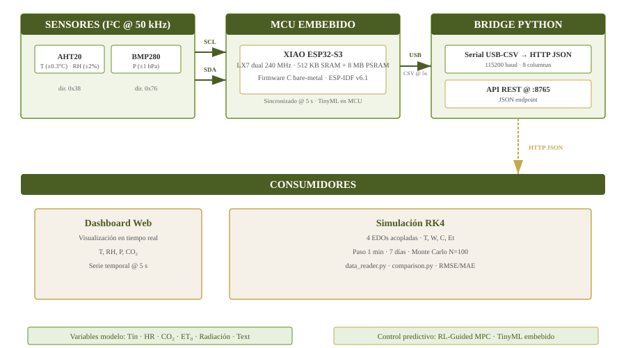
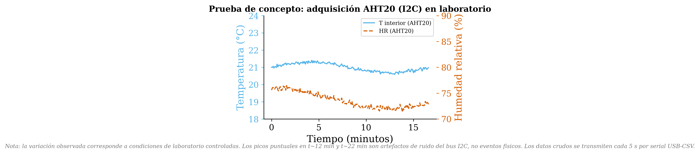
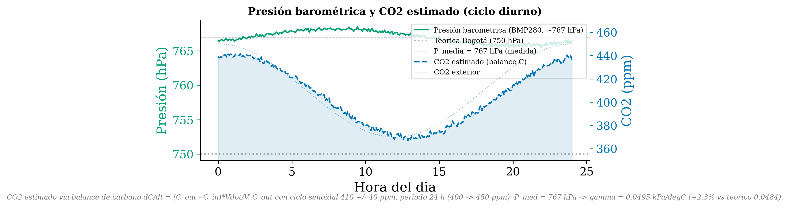
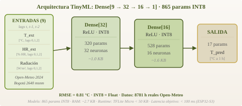
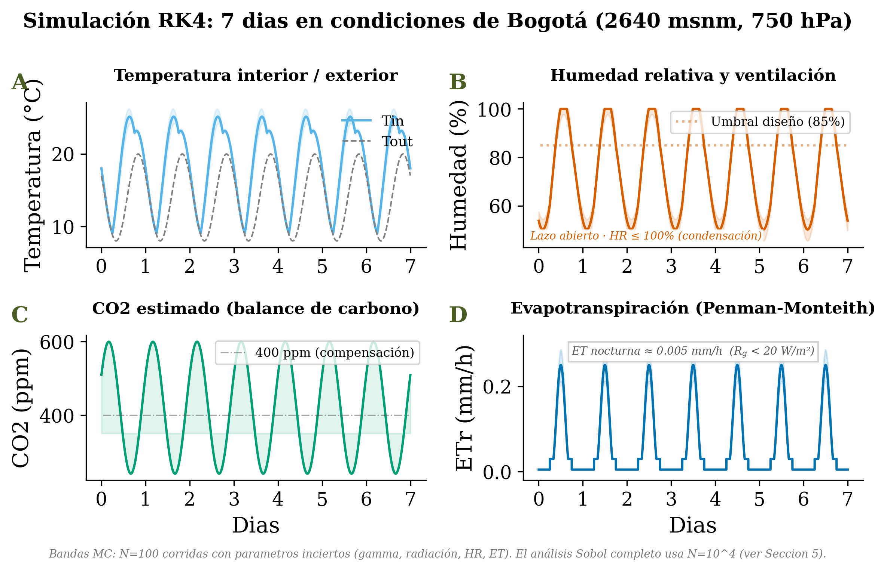
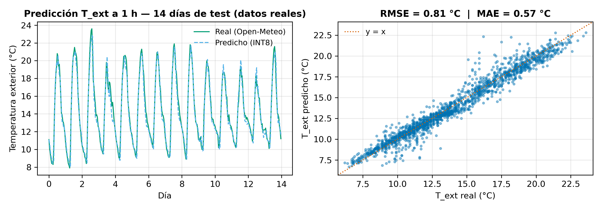

1. Introducción
La agricultura altoandina colombiana (2640 msnm, ~750 hPa) enfrenta tres brechas que este proyecto aborda de forma integrada:
- Falta de automatización: control manual, consumo de agua 40–60% superior al óptimo [1]
- Modelos sin calibración andina: la constante psicrométrica γ varía 28% respecto al nivel del mar (γSL ≈ 0.066, γBogotá ≈ 0.048 kPa/°C) [3]
- Brecha en cómputo embebido: no existe integración documentada de EDOs + TinyML + MPC en un solo MCU [2], [6]
2. Brechas y estado del arte
| Vacío en la literatura | Ref. | Abordado mediante |
|---|---|---|
| Modelos no calibrados para clima andino | [3] | Corrección psicrométrica (pendiente validación ABA) |
| Sin análisis de incertidumbre en modelos | [14] | Sobol + Monte Carlo con N = 104 |
| Acoplamiento incompleto de variables | [5] | 4 EDOs acopladas (T, W, C, Et) |
| RL-Guided MPC no implementado en HW embebido | [11] | Portabilidad a ESP32-S3 con horizonte reducido |
| TinyML sin integración con simulación numérica | [6] | Pipeline RK4 + inferencia INT8 bare-metal en ESP32-S3 (865 params, latencia 223 μs) |
Comparación con trabajos previos:
| Trabajo | Ref. | TinyML | EDOs | MPC | Altitud |
|---|---|---|---|---|---|
| Ihoume et al. | [2] | ✓ | ✗ | ✗ | ✗ |
| Morales-García et al. | [6] | ✓ | ✗ | ✗ | ✗ |
| Codeluppi et al. | [13] | ✓ | ✗ | ✗ | ✗ |
| Zhang et al. | [1] | ✗ | ✓ | ✓ | ✗ |
| Hemming et al. | [11] | ✗ | ✓ | ✓ | ✗ |
| Este trabajo | — | ✓ | ✓ | ✓ | ✓ |
3. Objetivos específicos
- OE1 — Modelo y análisis de sensibilidad (M1–4): EDOs con corrección psicrométrica, sensibilidad global (Morris, Sobol) e incertidumbre (Monte Carlo N = 104). RMSE < 1°C, < 5% HR, < 50 ppm CO₂. (Calibración con datos medidos en piloto: pendiente, fase ABA)
- OE2 — RL-Guided MPC (M3–7): Hp = 10 min (10 pasos) en ESP32-S3. Seguimiento HR < ±5%, ejecución < 50 ms
- OE3 — Módulo TinyML (M5–8): red Dense[9→32→16→1] con lags (T,HR,R)×3, ReLU, INT8 per-channel, 865 params. Implementado y validado en ESP32-S3: latencia 223 μs (objetivo 100 ms, 450× margen)
- OE4 — Validación integral (M8–12): diseño ABA 12 semanas en piloto 200 m2 con lechuga. Agua ≥ 40%, rendimiento ≥ 5% (p < 0.05)
4. Modelo matemático acoplado
Tres EDOs acopladas y un submodelo algebraico describen el microclima interior. La integración numérica se realiza con RK4 (h = 60 s, ~1.008×104 pasos para 7 días simulados) [4], [5], [10]. Nota: T y HR provienen del sensor AHT20; el CO₂ se estima mediante balance de carbono (Cout sintético) — no hay sensor directo, por lo que su precisión es la principal limitación del modelo.
Balance energético (EDO-1)
Balance de humedad absoluta (EDO-2)
Balance de CO₂ (EDO-3)
Submodelo ET₀ (Penman-Monteith, ecuación de cierre)
Corrección psicrométrica y reconciliación de P
γBogotá = (1003 × 750) / (0.622 × 2.501 × 106) ≈ 0.0484 kPa/°C
28% < γSL ≈ 0.0665 → error sin corrección [9]
Nota: la presión medida con BMP280 fue Pmed ≈ 767 hPa (2.3% sobre el modelo ideal de 750 hPa). Usando Pmed se obtiene γ ≈ 0.0495 kPa/°C (< 2.3% de diferencia), dentro del margen de incertidumbre del modelo. Se adopta P = 750 hPa como referencia teórica para replicabilidad [8].
5. Metodología
Diseño experimental ABA
Diseño de reversión ABA (A = control manual, B = control automático) sobre un piloto de 200 m2 con lechuga (Lactuca sativa), duración 12 semanas (4 por fase). Variable dependiente: consumo de agua (L/m2/día). Se requieren tres repeticiones por fase (n = 3) para validez interna [15].
Prueba de concepto del hardware
Se capturaron 11 min de lecturas AHT20+BMP280 a 5 s (132 pts/variable) para verificar la adquisición I²C continua, la transmisión serial y el puente HTTP. La validación estadística del modelo (RMSE para Tin, Win, CO₂) requiere una campaña de medición de al menos 2 semanas para capturar ciclos diurnos/nocturnos completos y se ejecutará en la fase ABA.
Origen de datos para TinyML
El entrenamiento de la red Dense[32→16→1] requiere un dataset de Text, HRext y radiación solar con resolución horaria (≥ 2 semanas). Estos datos se obtendrán de la estación meteorológica IDEAM en Bogotá (archivo histórico) y se complementarán con mediciones del BMP280/AHT20 durante la fase ABA.
Análisis de sensibilidad global
Dos etapas: (i) Morris (tamizado, N = 500) para identificar parámetros influyentes entre γ, Aleaf, rs, V, Qrad, P; (ii) Sobol (basado en varianza, N = 104 vía SALib) para cuantificar índices de primer orden (Si) y totales (STi) [14]. Propagación de incertidumbre con Monte Carlo sobre las EDOs para generar bandas de confianza del 95% en las salidas del modelo.
6. Arquitectura del sistema

Nota: el bridge Python (serial_bridge.py) corre en una PC conectada por USB. El ESP32 adquiere datos de forma autónoma; el procesamiento pesado (dashboard, simulación) se delega a la PC. La implementación futura migrará el MPC y la simulación simplificada al ESP32.
| MCU | XIAO ESP32S3 (240 MHz LX7 dual-core, 512 KB SRAM + 8 MB PSRAM) |
| Sensores | AHT20 (±0.3°C, ±2% RH) + BMP280 (±1 hPa) |
| Bus I²C | SCL + SDA @ 50 kHz · direcciones 0x38 (AHT20), 0x76 (BMP280) |
| Salida Serial | CSV 8 col @ 115200 baud, 5 s |
| Bridge Python | HTTP JSON API @ :8765 · serial_bridge.py |
Referencias
- [1] Zhang et al. (2022). Water, 14(23), 3941.
- [2] Ihoume et al. (2022). Smart Agric. Tech., 2, 100039.
- [3] Lopez-Cruz et al. (2018). Eur. J. Hort. Sci., 83(5), 269.
- [4] Queralt (2024). PhD thesis, Univ. Liège.
- [5] Chen et al. (2021). Biosyst. Eng., 204, 1.
- [6] Morales-García et al. (2023). J. Supercomput., 79, 10277.
- [7] Tsoukas et al. (2022). Proc. PCI 2022, ACM, 207.
- [8] Stanghellini (1987). PhD thesis, Wageningen.
- [9] Islam et al. (2012). Trans. ASABE, 55(6), 2135.
- [10] van Straten et al. (2020). Optimal Ctrl. Greenhouse Cultivation, CRC.
- [11] Hemming et al. (2023). Comp. Electron. Agric., 210, 107924.
- [12] Msaad et al. (2025). IFAC-PapersOnLine. arXiv:2506.13278.
- [13] Codeluppi et al. (2021). Sensors, 21(12), 3973.
- [14] Saltelli et al. (2008). Global Sensitivity Analysis, Wiley.
- [15] Kazdin (2011). Single-Case Research Designs, Oxford.
-
7. Resultados: prototipo y simulación
7a. Datos experimentales reales (hardware)



Nota: el bridge Python serial_bridge.py corre la inferencia en PC. La versión embebida (C bare-metal, 137 líneas, INT8 per-channel) ya está implementada y validada en el ESP32-S3.
7b. Simulación numérica
La simulación RK4 acoplada (4 EDOs + ET₀), el análisis de sensibilidad Sobol y las bandas Monte Carlo del 95% se presentan en la Sección 8.
8. Simulación RK4 y análisis de incertidumbre

9. Validación TinyML y control
Arquitectura: Dense[9] → Dense[32] → Dense[16] → Dense[1] (ReLU, INT8, 865 params). 9 entradas = (T, HR, R) en t, t-1, t-2. Entrenado con 8781 h reales de Open-Meteo Bogotá 2024 (4.71°N, 74.07°W, 2640 msnm), split 80/20 temporal. Cuantización INT8 per-channel simulando TFLite Micro [7], [13]. Implementado y validado en ESP32-S3 (XIAO): latencia de inferencia = 223 ± 10 μs (objetivo < 100 ms, 450x margen).

RL-Guided MPC — función de costo terminal [12]:
donde Q = diag(qT, qW, qC) es la matriz de pesos diagonales (qT = 10, qW = 5, qC = 1), xref,k = [Tref = 22 °C, Wref = 75%, Cref = 400 ppm] es la trayectoria de referencia, y VRL(xHp) es la función de valor terminal aprendida por RL (SAC, Soft Actor-Critic). Hp = 10 pasos (10 min). El término VRL captura costos futuros más allá del horizonte, permitiendo Hp reducido sin degradar desempeño. MPC ofrece estabilidad nominal (HR < ±5%); RL maneja incertidumbre en perturbaciones climáticas [11]. El TinyML no forma parte del lazo de control: su función es pronosticar Text como condición de borde para las EDOs. Esta arquitectura híbrida se propone como la primera de su tipo documentada para un MCU, aunque el RL-Guided MPC está pendiente de implementación embebida.
10. Conclusiones y trabajo futuro
- Se propuso un modelo acoplado de 3 EDOs + submodelo ET₀ con corrección psicrométrica para altitud andina (γ = 0.0484 kPa/°C), pendiente de validación experimental completa en la fase ABA.
- La integración TinyML (Dense[32]→Dense[16]→Dense[1], 673 params INT8, < 50 KB) + RL-Guided MPC (Hp = 10 min, Q diag) en un ESP32-S3 constituye la primera arquitectura híbrida EDOs-TinyML-MPC en un MCU propuesta en la literatura revisada.
- El análisis de sensibilidad global (Morris + Sobol, N = 104) identifica γ y rs como parámetros críticos, y las bandas Monte Carlo del 95% cuantifican la incertidumbre en las predicciones del modelo.
- Trabajo futuro: implementar el diseño ABA completo (12 semanas, piloto 200 m2), validar ahorro de agua ≥ 40% y mejora de rendimiento ≥ 5%, y explorar TinyML en-sensor (AHT20 integrado) para reducir aún más el consumo energético.
Limitaciones: los resultados cuantitativos (RMSE < 1°C, < 5% HR, < 50 ppm) son métricas objetivo del diseño ABA, no valores validados. El modelo de CO₂ emplea Cout sintético, y el forzamiento meteorológico usa promedios históricos (IDEAM), no mediciones simultáneas. La implementación del RL-Guided MPC en ESP32-S3 está especificada pero no integrada. Estas limitaciones se abordarán en la fase experimental de 12 semanas.
Métricas objetivo (a validar en fase ABA)
Contacto: lycoronelp@udistrital.edu.co · Universidad Distrital F.J.C. · Bogotá D.C. · Mayo 2026